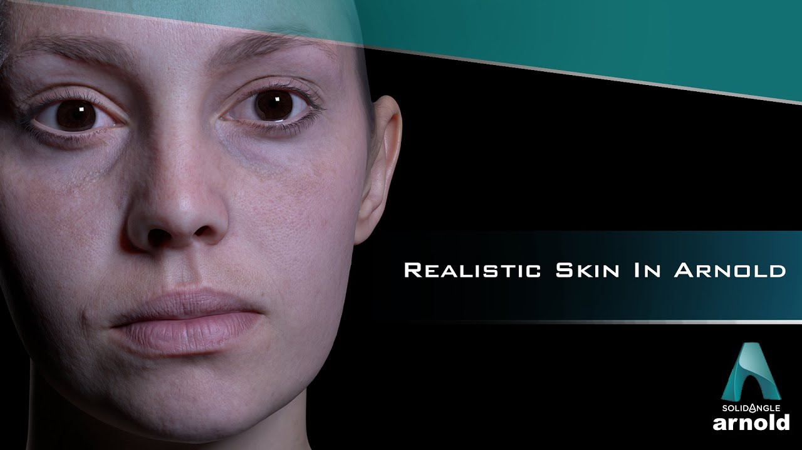
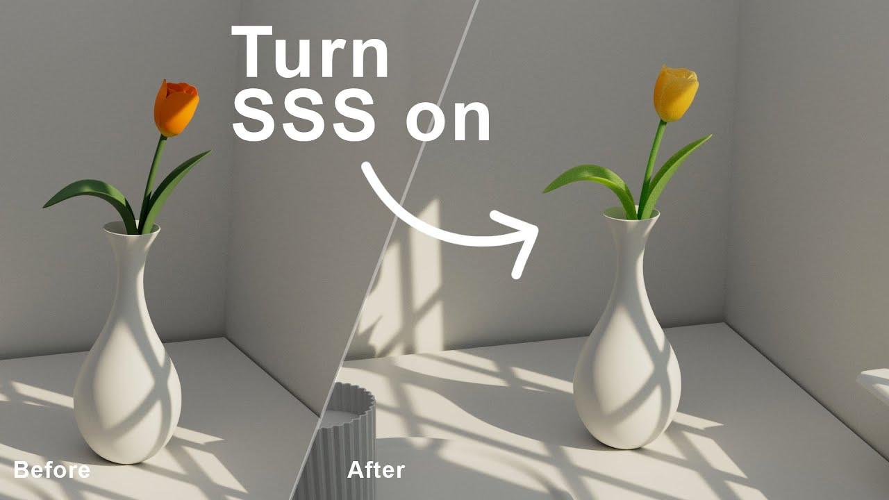
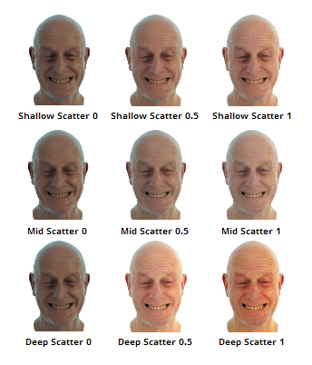
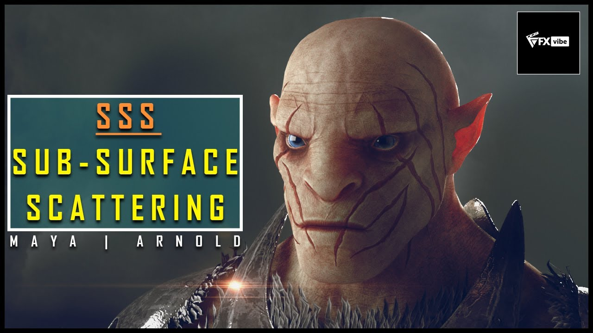
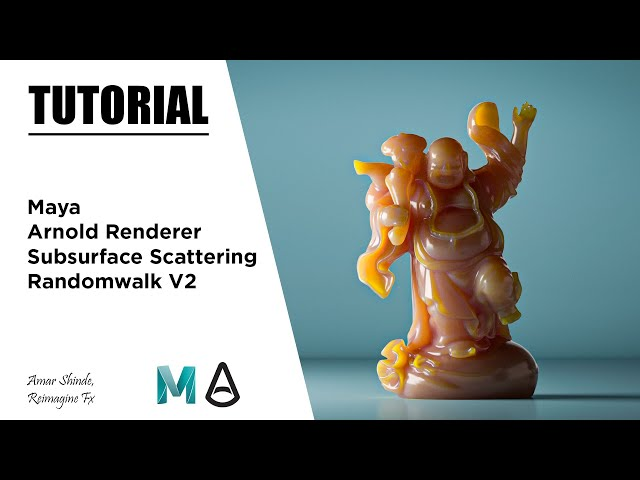

SSS 개념 및 원리
서브서피스 스캐터링(SSS)은 빛이 표면에서 반사되지 않고 물체 내부로 침투한 후 산란되어 다시 나오는 현상을 시뮬레이션하는 고급 렌더링 기법입니다.
인간 피부, 대리석, 우유, 왁스 등 반투명 재질에서 자연스러운 표현을 가능하게 하며, Pixar와 Disney 애니메이션의 캐릭터 표현에 필수적인 기술입니다.
피부 렌더링
여러 층의 산란 효과로 피부의 깊이감과 부드러움을 표현
왁스/캔들 효과
빛 투과와 내부 산란으로 불투명도 깊이감 구현
액체/우유 효과
깊이에 따른 빛 감쇠와 컬러 변화 표현
대리석/옥 효과
미세한 내부 구조를 통한 빛의 투과 시뮬레이션
렌더러별 설정 및 예시





SSS 실습 가이드
1
MayaArnold aiStandardSurface 쉐이더의 Subsurface 가중치 설정 (0.3~0.8)
2
V-Ray VRayMtl의 SSS 파라미터와 산란 반경 조정
3
SSS Radius 컬러 설정으로 RGB 채널별 침투 깊이 제어
4
디테일 부위(귀, 코)에 특수 마스크 맵 적용
5
Disney 다층 SSS 기법으로 Epidermal/Subdermal 레이어 분리
6
랜덤 워크 알고리즘 활용으로 사실적 피부 톤 구현